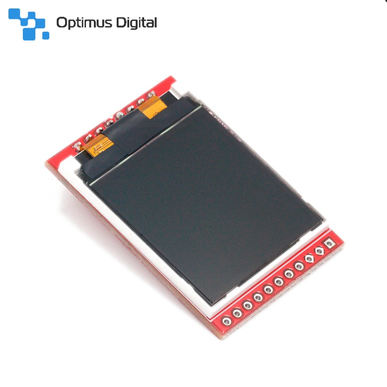
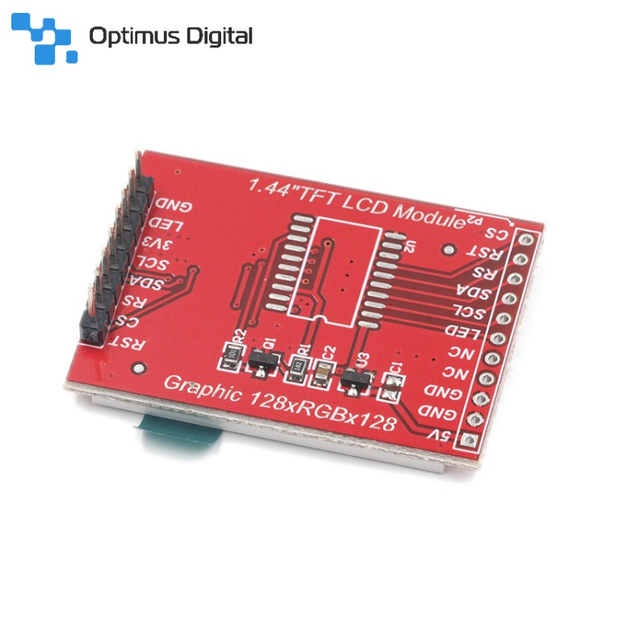
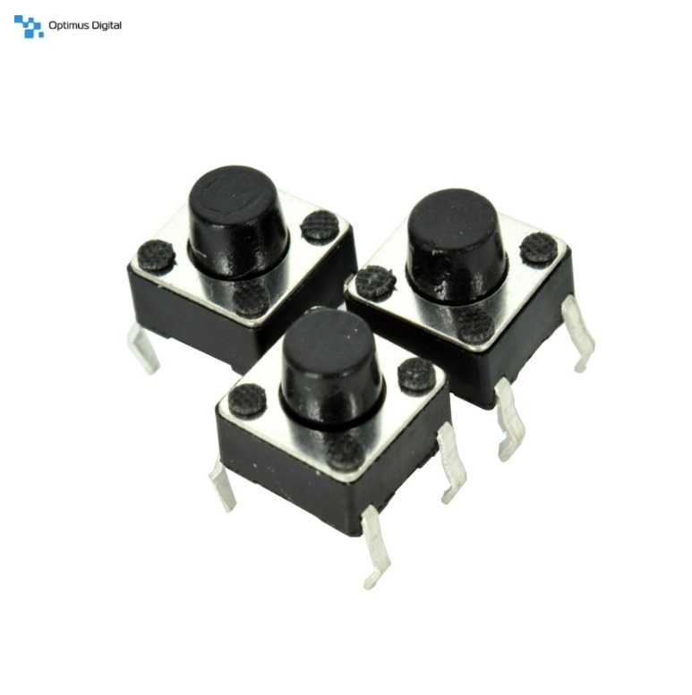

Jocul Snake este un joc clasic în care un șarpe se mișcă pe un ecran, consumând mâncare pentru a crește în lungime. Scopul jocului este de a evita coliziunea cu pereții și cu propriul său corp, pentru a obține un scor cât mai mare în final.
Acesta are rezoluția de 128*128 pixeli (RGB) de diagonala de 1.44", model TFT.


Link achiziționare: ecranLCD
4 butoane care vor reprezenta câte o direcție (sus/jos/stânga/dreapta).

Link achiziționare: butoane
Firele vor fi folosite pentru conexiunile dintre componente și breadboard-ul pentru testarea acestora.
Link achiziționare: breadboard și fire
Jocul Snake implementat va funcționa prin interacțiunea între microcontroller-ului STM32 și afișaj, utilizând comunicația serială SPI pentru a transmite datele de afișare. Microcontroller-ul va actualiza continuu buffer-ul de afișare al LCD-ului, desenând elementele jocului, cum ar fi șarpele/mâncarea, pe baza stării curente a jocului și a intrărilor utilizatorului. Intrarea de la butoane va fi citită de microcontroller și interpretată ca și comenzi de mișcare pentru șarpe (fiecare buton va avea logică de control implementată care atribuie fiecăruia câte o direcție: sus/jos/stânga/dreapta).
În paralel, microcontroller-ul efectuează verificări continue pentru a detecta coliziunile dintre șarpe și marginile ecranului (compararea pozițiilor capului șarpelui cu limitele ecranului, cunoscute) sau propriul corp (compararea pozițiilor capului cu pozițiile segmentelor corpului). Pentru a eficientiza verificările, pozițiile capului și ale segmentelor corpului șarpelui vor fi stocate într-o listă/vector. Dacă o coliziune va fi detectată (pozițiile comparate vor fi egale), jocul se încheie, iar scorul final va fi afișat pe ecran.
*modificare ulterioară: Din dorința de a crea un joc cât mai interactiv, dar și complex, am renunțat la ideea terminării jocului în cazul coliziunii cu marginile ecranului. Astfel, șarpele va fi capabil să treacă prin pereți și să apară discontinuu în partea opusă a ecranului, urmând să își continue normal deplasarea; iar singura modalitate prin care jocul se va termina va fi prin coliziunea șarpelui cu el însuși.
Mâncarea va fi generată la o poziție aleatoare de pe ecran, definindu-se o zonă validă în care aceasta poate să apară (toată suprafața ecranului minus spațiul deja ocupat de corpul șarpelui sau de altă mâncare generată anterior). Se vor genera aleatoriu două coordonate (x,y) în cadrul spațiului valid definit. La fiecare actualizare a poziției șarpelui, se verifică intersecția capului cu mâncarea, iar în cazul potrivirii, lungimea sa va crește și scorul va fi actualizat.
Logica de scor e implementată pentru a urmări performanța utilizatorului pe parcursul jocului. La începutul jocului, scorul este inițializat la zero. În momentul în care șarpele consumă mâncarea, scorul jucătorului este crescut (fiecare bucată de mâncare consumată aduce un anumit număr de puncte, iar scorul va fi incrementat cu o valoare fixă). Scorul va fi afișat pe ecran, într-un colț, în timp real, iar la final va apărea central.